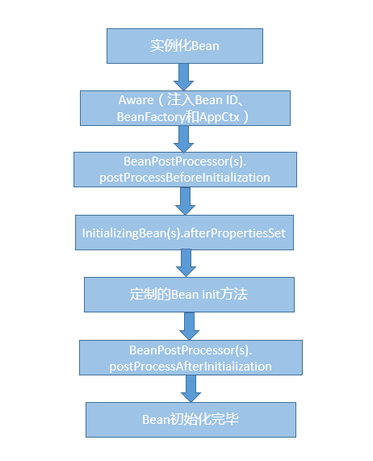
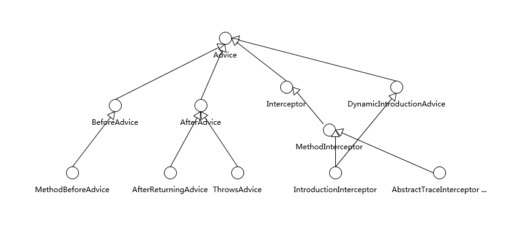
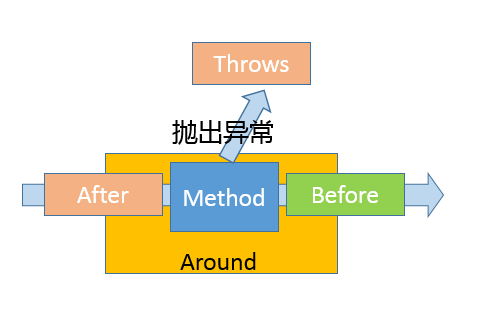
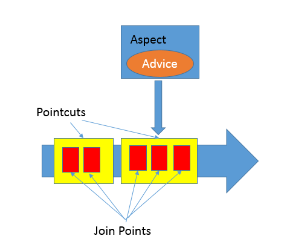

- 00 开篇词 以面试题为切入点，有效提升你的Java内功-极客时间.md.html
- 01 谈谈你对Java平台的理解？.md.html
- 02 Exception和Error有什么区别？-极客时间.md.html
- 03 谈谈final、finally、 finalize有什么不同？-极客时间.md.html
- 04 强引用、软引用、弱引用、幻象引用有什么区别？-极客时间.md.html
- 05 String、StringBuffer、StringBuilder有什么区别？-极客时间.md.html
- 06 动态代理是基于什么原理？-极客时间.md.html
- 07 int和Integer有什么区别？-极客时间.md.html
- 08 对比Vector、ArrayList、LinkedList有何区别？-极客时间.md.html
- 09 对比Hashtable、HashMap、TreeMap有什么不同？-极客时间.md.html
- 10 如何保证集合是线程安全的 ConcurrentHashMap如何实现高效地线程安全？-极客时间.md.html
- 11 Java提供了哪些IO方式？ NIO如何实现多路复用？-极客时间.md.html
- 12 Java有几种文件拷贝方式？哪一种最高效？-极客时间.md.html
- 13 谈谈接口和抽象类有什么区别？-极客时间.md.html
- 14 谈谈你知道的设计模式？-极客时间.md.html
- 15 synchronized和ReentrantLock有什么区别呢？-极客时间.md.html
- 16 synchronized底层如何实现？什么是锁的升级、降级？-极客时间.md.html
- 17 一个线程两次调用start()方法会出现什么情况？-极客时间.md.html
- 18 什么情况下Java程序会产生死锁？如何定位、修复？-极客时间.md.html
- 19 Java并发包提供了哪些并发工具类？-极客时间.md.html
- 20 并发包中的ConcurrentLinkedQueue和LinkedBlockingQueue有什么区别？-极客时间.md.html
- 21 Java并发类库提供的线程池有哪几种？ 分别有什么特点？-极客时间.md.html
- 22 AtomicInteger底层实现原理是什么？如何在自己的产品代码中应用CAS操作？-极客时间.md.html
- 23 请介绍类加载过程，什么是双亲委派模型？-极客时间.md.html
- 24 有哪些方法可以在运行时动态生成一个Java类？-极客时间.md.html
- 25 谈谈JVM内存区域的划分，哪些区域可能发生OutOfMemoryError-极客时间.md.html
- 26 如何监控和诊断JVM堆内和堆外内存使用？-极客时间.md.html
- 27 Java常见的垃圾收集器有哪些？-极客时间.md.html
- 28 谈谈你的GC调优思路-极客时间.md.html
- 29 Java内存模型中的happen-before是什么？-极客时间.md.html
- 30 Java程序运行在Docker等容器环境有哪些新问题？-极客时间.md.html
- 31 你了解Java应用开发中的注入攻击吗？-极客时间.md.html
- 32 如何写出安全的Java代码？-极客时间.md.html
- 33 后台服务出现明显“变慢”，谈谈你的诊断思路？-极客时间.md.html
- 34 有人说“Lambda能让Java程序慢30倍”，你怎么看？-极客时间.md.html
- 35 JVM优化Java代码时都做了什么？-极客时间.md.html
- 36 谈谈MySQL支持的事务隔离级别，以及悲观锁和乐观锁的原理和应用场景？-极客时间.md.html
- 37 谈谈Spring Bean的生命周期和作用域？-极客时间.md.html
- 38 对比Java标准NIO类库，你知道Netty是如何实现更高性能的吗？-极客时间.md.html
- 39 谈谈常用的分布式ID的设计方案？Snowflake是否受冬令时切换影响？-极客时间.md.html
- 周末福利 一份Java工程师必读书单-极客时间.md.html
- 周末福利 谈谈我对Java学习和面试的看法-极客时间.md.html
- 结束语 技术没有终点-极客时间.md.html
- 捐赠
37 谈谈Spring Bean的生命周期和作用域？-极客时间
在企业应用软件开发中，Java 是毫无争议的主流语言，开放的 Java EE 规范和强大的开源框架功不可没，其中 Spring 毫无疑问已经成为企业软件开发的事实标准之一。今天这一讲，我将补充 Spring 相关的典型面试问题，并谈谈其部分设计细节。
今天我要问你的问题是，
在企业应用软件开发中，Java 是毫无争议的主流语言，开放的 Java EE 规范和强大的开源框架功不可没，其中 Spring 毫无疑问已经成为企业软件开发的事实标准之一。今天这一讲，我将补充 Spring 相关的典型面试问题，并谈谈其部分设计细节。
今天我要问你的问题是，谈谈 Spring Bean 的生命周期和作用域？
典型回答
Spring Bean 生命周期比较复杂，可以分为创建和销毁两个过程。
首先，创建 Bean 会经过一系列的步骤，主要包括：
- 实例化 Bean 对象。
- 设置 Bean 属性。
- 如果我们通过各种 Aware 接口声明了依赖关系，则会注入 Bean 对容器基础设施层面的依赖。具体包括 BeanNameAware、BeanFactoryAware 和 ApplicationContextAware，分别会注入 Bean ID、Bean Factory 或者 ApplicationContext。
- 调用 BeanPostProcessor 的前置初始化方法 postProcessBeforeInitialization。
- 如果实现了 InitializingBean 接口，则会调用 afterPropertiesSet 方法。
- 调用 Bean 自身定义的 init 方法。
- 调用 BeanPostProcessor 的后置初始化方法 postProcessAfterInitialization。
- 创建过程完毕。
你可以参考下面示意图理解这个具体过程和先后顺序。

第二，Spring Bean 的销毁过程会依次调用 DisposableBean 的 destroy 方法和 Bean 自身定制的 destroy 方法。
Spring Bean 有五个作用域，其中最基础的有下面两种：
- Singleton，这是 Spring 的默认作用域，也就是为每个 IOC 容器创建唯一的一个 Bean 实例。
- Prototype，针对每个 getBean 请求，容器都会单独创建一个 Bean 实例。
从 Bean 的特点来看，Prototype 适合有状态的 Bean，而 Singleton 则更适合无状态的情况。另外，使用 Prototype 作用域需要经过仔细思考，毕竟频繁创建和销毁 Bean 是有明显开销的。
如果是 Web 容器，则支持另外三种作用域：
- Request，为每个 HTTP 请求创建单独的 Bean 实例。
- Session，很显然 Bean 实例的作用域是 Session 范围。
- GlobalSession，用于 Portlet 容器，因为每个 Portlet 有单独的 Session，GlobalSession 提供一个全局性的 HTTP Session。
考点分析
今天我选取的是一个入门性质的高频 Spring 面试题目，我认为相比于记忆题目典型回答里的细节步骤，理解和思考 Bean 生命周期所体现出来的 Spring 设计和机制更有意义。
你能看到，Bean 的生命周期是完全被容器所管理的，从属性设置到各种依赖关系，都是容器负责注入，并进行各个阶段其他事宜的处理，Spring 容器为应用开发者定义了清晰的生命周期沟通界面。
如果从具体 API 设计和使用技巧来看，还记得我在【专栏第 13 讲】提到过的 Marker Interface 吗，Aware 接口就是个典型应用例子，Bean 可以实现各种不同 Aware 的子接口，为容器以 Callback 形式注入依赖对象提供了统一入口。
言归正传，还是回到 Spring 的学习和面试。关于 Spring，也许一整本书都无法完整涵盖其内容，专栏里我会有限地补充：
- Spring 的基础机制。
- Spring 框架的涵盖范围。
- Spring AOP 自身设计的一些细节，前面第【 24 讲】偏重于底层实现原理，这样还不够全面，毕竟不管是动态代理还是字节码操纵，都还只是基础，更需要 Spring 层面对切面编程的支持。
知识扩展
首先，我们先来看看 Spring 的基础机制，至少你需要理解下面两个基本方面。
- 控制反转（Inversion of Control），或者也叫依赖注入（Dependency Injection），广泛应用于 Spring 框架之中，可以有效地改善了模块之间的紧耦合问题。
从 Bean 创建过程可以看到，它的依赖关系都是由容器负责注入，具体实现方式包括带参数的构造函数、setter 方法或者AutoWired方式实现。
- AOP，我们已经在前面接触过这种切面编程机制，Spring 框架中的事务、安全、日志等功能都依赖于 AOP 技术，下面我会进一步介绍。
第二，Spring 到底是指什么？
我前面谈到的 Spring，其实是狭义的Spring Framework，其内部包含了依赖注入、事件机制等核心模块，也包括事务、O/R Mapping 等功能组成的数据访问模块，以及 Spring MVC 等 Web 框架和其他基础组件。
广义上的 Spring 已经成为了一个庞大的生态系统，例如：
- Spring Boot，通过整合通用实践，更加自动、智能的依赖管理等，Spring Boot 提供了各种典型应用领域的快速开发基础，所以它是以应用为中心的一个框架集合。
- Spring Cloud，可以看作是在 Spring Boot 基础上发展出的更加高层次的框架，它提供了构建分布式系统的通用模式，包含服务发现和服务注册、分布式配置管理、负载均衡、分布式诊断等各种子系统，可以简化微服务系统的构建。
- 当然，还有针对特定领域的 Spring Security、Spring Data 等。
上面的介绍比较笼统，针对这么多内容，如果将目标定得太过宽泛，可能就迷失在 Spring 生态之中，我建议还是深入你当前使用的模块，如 Spring MVC。并且，从整体上把握主要前沿框架（如 Spring Cloud）的应用范围和内部设计，至少要了解主要组件和具体用途，毕竟如何构建微服务等，已经逐渐成为 Java 应用开发面试的热点之一。
第三，我们来探讨一下更多有关 Spring AOP 自身设计和实现的细节。
先问一下自己，我们为什么需要切面编程呢？
切面编程落实到软件工程其实是为了更好地模块化，而不仅仅是为了减少重复代码。通过 AOP 等机制，我们可以把横跨多个不同模块的代码抽离出来，让模块本身变得更加内聚，进而业务开发者可以更加专注于业务逻辑本身。从迭代能力上来看，我们可以通过切面的方式进行修改或者新增功能，这种能力不管是在问题诊断还是产品能力扩展中，都非常有用。
在之前的分析中，我们已经分析了 AOP Proxy 的实现原理，简单回顾一下，它底层是基于 JDK 动态代理或者 cglib 字节码操纵等技术，运行时动态生成被调用类型的子类等，并实例化代理对象，实际的方法调用会被代理给相应的代理对象。但是，这并没有解释具体在 AOP 设计层面，什么是切面，如何定义切入点和切面行为呢？
Spring AOP 引入了其他几个关键概念：
- Aspect，通常叫作方面，它是跨不同 Java 类层面的横切性逻辑。在实现形式上，既可以是 XML 文件中配置的普通类，也可以在类代码中用“@Aspect”注解去声明。在运行时，Spring 框架会创建类似Advisor来指代它，其内部会包括切入的时机（Pointcut）和切入的动作（Advice）。
- Join Point，它是 Aspect 可以切入的特定点，在 Spring 里面只有方法可以作为 Join Point。
- Advice，它定义了切面中能够采取的动作。如果你去看 Spring 源码，就会发现 Advice、Join Point 并没有定义在 Spring 自己的命名空间里，这是因为他们是源自AOP 联盟，可以看作是 Java 工程师在 AOP 层面沟通的通用规范。
Java 核心类库中同样存在类似代码，例如 Java 9 中引入的 Flow API 就是 Reactive Stream 规范的最小子集，通过这种方式，可以保证不同产品直接的无缝沟通，促进了良好实践的推广。
具体的 Spring Advice 结构请参考下面的示意图。

其中，BeforeAdvice 和 AfterAdvice 包括它们的子接口是最简单的实现。而 Interceptor 则是所谓的拦截器，用于拦截住方法（也包括构造器）调用事件，进而采取相应动作，所以 Interceptor 是覆盖住整个方法调用过程的 Advice。通常将拦截器类型的 Advice 叫作 Around，在代码中可以使用“@Around”来标记，或者在配置中使用<aop:around>。
如果从时序上来看，则可以参考下图，理解具体发生的时机。

- Pointcut，它负责具体定义 Aspect 被应用在哪些 Join Point，可以通过指定具体的类名和方法名来实现，或者也可以使用正则表达式来定义条件。
你可以参看下面的示意图，来进一步理解上面这些抽象在逻辑上的意义。

- Join Point 仅仅是可利用的机会。
- Pointcut 是解决了切面编程中的 Where 问题，让程序可以知道哪些机会点可以应用某个切面动作。
- 而 Advice 则是明确了切面编程中的 What，也就是做什么；同时通过指定 Before、After 或者 Around，定义了 When，也就是什么时候做。
在准备面试时，如果在实践中使用过 AOP 是最好的，否则你可以选择一个典型的 AOP 实例，理解具体的实现语法细节，因为在面试考察中也许会问到这些技术细节。
如果你有兴趣深入内部，最好可以结合 Bean 生命周期，理解 Spring 如何解析 AOP 相关的注解或者配置项，何时何地使用到动态代理等机制。为了避免被庞杂的源码弄晕，我建议你可以从比较精简的测试用例作为一个切入点，如CglibProxyTests。
另外，Spring 框架本身功能点非常多，AOP 并不是它所支持的唯一切面技术，它只能利用动态代理进行运行时编织，而不能进行编译期的静态编织或者类加载期编织。例如，在 Java 平台上，我们可以使用 Java Agent 技术，在类加载过程中对字节码进行操纵，比如修改或者替换方法实现等。在 Spring 体系中，如何做到类似功能呢？你可以使用 AspectJ，它具有更加全面的能力，当然使用也更加复杂。
今天我从一个常见的 Spring 面试题开始，浅谈了 Spring 的基础机制，探讨了 Spring 生态范围，并且补充分析了部分 AOP 的设计细节，希望对你有所帮助。
一课一练
关于今天我们讨论的题目你做到心中有数了吗？今天的思考题是，请介绍一下 Spring 声明式事务的实现机制，可以考虑将具体过程画图。
请你在留言区写写你对这个问题的思考，我会选出经过认真思考的留言，送给你一份学习奖励礼券，欢迎你与我一起讨论。
你的朋友是不是也在准备面试呢？你可以“请朋友读”，把今天的题目分享给好友，或许你能帮到他。
© 2019 - 2023 Liangliang Lee. Powered by gin and hexo-theme-book.